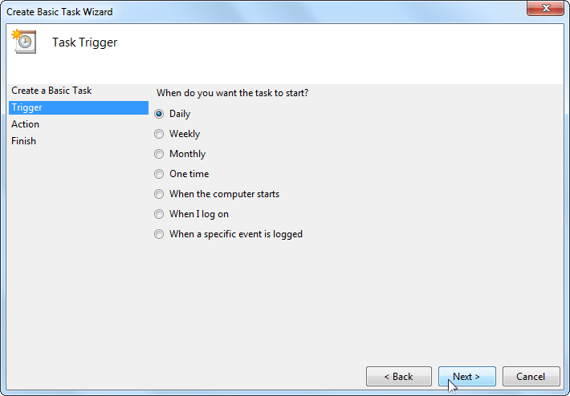

Usare il Google Maps Engine Connector con QGIS
[ Download PDF A4 Letter ]
Avvertimento
As of 29 January, 2015 Google Maps Engine has stopped creation of new free
accounts. If you already have a Maps Engine account, the Google Maps Engine
Connector will continue to work till 29 January, 2016.
Il Google Maps Engine è una piattaforma cartografica digitale di tipo Cloud che permette agli utenti di creare e condividere mappe. Google Maps Engine Connector è invece un plugin che vi permette di vedere e caricare i dati del Google Maps Engine all’interno di QGIS. Nel corso di questa esercitazione vedremo come creare un account per il Google Maps Engine, come ottenere le credenziali per usare il connector, come creare una mappa usando il Google Maps Engine e, infine, come utilizzarla in QGIS.
Nota
Audofè: Sono l’autore del Google Maps Engine Connector e attualmente faccio parte del team di Google Maps.
Descrizione dell’esercizio
Scaricheremo un layer lineare che descrive le piste ciclabili nel territorio di di San Francisco e lo caricheremo dal Motore di Google Maps usando il plugin. Una volta che avremo tematizzato il layer creato la mappa aggiungeremo questa mappa a QGIS come fosse un layer WMS.
Altri aspetti che avremo modo di apprendere nel corso dell’esercizio
Ottenere i dati necessari
San Francisco Data è una fonte straordinaria per gli open data che interessano la città di San Francisco.
Scaricate lo shapefile SFMTA Bikeway Network usando l’opzione Export del portale.

Fonte Dati [SFMTA]
Creare un account per accedere al Google Maps Engine
Dovete fare l’iscrizione per un account di prova gratuito al Google Maps Engine. L’account gratuito di prova consente un accesso completo a tutte le funzioni dell’Engine ma con un quantitativo limitato di risorse da utilizzare.
Visitate la Google Maps Engine homepage e fate click sul link Inizia con un account gratuito.

Dovrete compilare il vostro account Google. Se siete soliti lavorare con la posta elettronica di Google potete creare un nuovo Google account con il vostro indirizzo di posta elettronica. Una volta iscritti, vedrete la schermata del Create a Maps Engine Project. Inserite un nome del progetto che servirà a identificare il vostro account quando usate Google Map Engine. Accettate i termini e fate click sui pulsanti guilabel:Accetta e crea.

Creare un progetto dalla Google Developer Console
Il Google Maps Engine Connector usa le Google Maps Engine API per accedere ai dati depositati nel vostro account. Avrete bisogno di ottenere credenziali speciali affinché il plugin possa avere accesso ai vostri dati in modo sistematico. Visitate la Google Developer Console e fate click su Create Project. Inserite il GME Connector for QGIS API come PROJECT NAME e gme-qgis-api come the PROJECT ID. Questi nomi sono puramente indicativi, potete usare i nomi che preferite.

Una volta che il progetto è stato creato, fate click sul link APIs & auth. Scorrete la barra fino a trovare:guilabel:Google Maps Engine API. Fate click sul pulsante OFF per spostarlo su ON.

Adesso fate click sul link Credentials . Fate click su CREATE NEW CLIEND ID sotto la sezione OAuth.

Nella finestra Create Client ID selezionate Installed Application come APPLICATION TYPE e Other come INSTALLED APPLICATION TYPE. Click su Create Client ID.

Una volta che il client ID è stato creato, potrete vedere una nuova sezione chiamata:guilabel:Client ID for native application. Annotate il Client ID`e il :guilabel:`Client secret. Si tratta delle credenziali di cui avrete bisogno per usare questo programma in QGIS.

Torniamo in QGIS e entriamo da . . Trovate il Google Maps Engine Connector e quindi fate click su Installa plugin.

Adesso che il plugin è installato, noterete una nuova barra degli strumenti in QGIS. Questa barra contiene vari strumenti per lavorare con il Google Maps Engine. Fate click sul pulsante More .

Nella finestra Advanced Settings inserite il Client ID e il Client Secret che avete ottenuto nella Google Developer Console. Fate click su Click OK.

Quando voi inserite le nuove credenziali API, vi sarà presentato di nuovo il login e il plugin sarà autorizzato ad usarle. Accedete al vostro account Google.

Fate click su Accept nella schermata succesiva.

Se tutto è andato per il giusto verso vedrete un messaggio che vi indica che l’operazione di login ha avuto successo.

A questo punto aggiungiamo finalmente il layer SFMTA Bikeway Network che avevamo scaricato all’inizio. Andate su . Individuate il file appena scaricato SFMTA_Bikeway_Network.zip e fate click su Apri.
Selezionate il file SFMTA_Bikeway_Network.shp. E fate click su:guilabel:OK.

Una delle caratteristiche del Google Maps Engine Connector consiste nella sua capacità di caricare i dataset direttamente da QGIS. Selezionate il SFMTA_Bikeway_Network e fate click sull’icona Upload nella barra degli strumenti.

Nella finestra Upload a dataset to Google Maps Engine inserite una descrizione del dataset. Potete lasciare tutte le altre impostazioni sui valori di default. Fate click su OK.

Il plugin userà il Google Maps Engine per caricare il layer e creare un Google Maps Engine*Data Source* Quando le operazioni di upload saranno concluse, si aprirà una nuova finestra nel browser e vedrete il nuovo data source.

Nei passi rimanenti percorreremo il procedimento di creazione di una mappa usando Google Maps Engine. Dopo che avremo creato la mappa, potremo accedere ad essa usando il plugin in QGIS. Una volta che la vostra tavola ha finito il processo di caricamento, fate click su Create styled layer.

Date al layer il nome di SFMTA_Bikeway_Network e fate click su:guilabel:Create.

Fate click su Add rule per realizzare una tematizzazione personalizzata del layer.

Scegliete i colori e le etichette con le opzioni che si trovano nella sezione Line style. Fate click su Apply per vedere le impostazioni di stile applicate al vostro layer. Potete anche selezionare l’opzione No Basemap per vedere il layer e le piste cliclabili senza la mappa di base sottostante. Quando siete soddisfatti della tematizzazione, potete spostarvi sulla scheda Info windows

Qui potete specificare quali contenuti verranno mostrati quando un elemento sarà cliccato sulla vostra mappa. Potete accedere agli elementi degli attributi usando {attribute_name}. Nel nostro caso vogliamo soltanto visualizzare il nome della strada al click sulle geometrie lineari.
Inserite il testo che segue qui sotto nell’area del codice. Fate click su Apply dopodiché fate click su qualsiasi geometria lineare sulla mappa e verificherete l’efficacia del nostro codice.
Quando avete finito, spuntate la casella Publish on exit e fate click su Exit.
<div class='googeb-info-window' style='font-family: sans-serif'>
{STREETNAME} {TYPE}
</div>

Fate click su Add to map per creare una mappa con questo layer.

Selezionate Create new e inserite SFMTA Bikeway Network come Map title.

Vedrete una nuova mappa contenente il layer che abbiamo tematizzato. Avete la possibilità di scegliere tra diverse mappa di base per la mappa. Visto che si tratta di un percorso per biciclette, sceglieremo lo stile Terrain per la nostra mappa di base.

Fate click su Publish map.

Una volta che la mappa è pubblicata, fate clisk sull’icona Access links .

Vedrete varie opzioni di visualizzazione della mappa. Visto che noi vogliamo solo accedere alla mappa usando QGIS, non abbiamo bisogno di alcun link tra quelli indicati.

Torniamo in QGIS e facciamo click sull’icona Search nella barra degli strumenti del plugin.

Nella finestra di dialogo Maps Engine Maps potrete vedere la vostra mappa elencata. Fate click sulla riga per selezionarla.Click su Add Selected to Map.

Il plugin interrogherà il Google Maps Engine e caricherà un layer vettoriale che contiene la bounding box della mappa. Se non vedete nessun tipo di dato sulla finestra principale di QGIS, fate click con il tasto destro sul layer SFMTA_Bikeway_Network e selezionate Zoom all’estensione del layer.

Click sul layer della bounding box per selezionarlo. Noterete che lo strumento View del plugin adesso è attivo.
Fate click sull’icona WMS Overlay della toolbar.

Nella finestra di dialogo Select A Layer to Add scegliete il layer SFMTA_Bikeway_Network e fate click su Add Selected to Map.

Un nuovo layer WMS sarà aggiunto a QGIS e potrete visualizzare dentro QGIS il vostro layer tematizzato poco fa nel Google Maps Engine.

Spero che questo tutorial vi abbia fornito una panoramica delle possibilità del plugin. Potete andare sulla homepage del plugin per vedere il codice sorgente e imparare cose nuove riguardanti il suo funzionamento.
Below is the Google Maps Engine map that was created for this tutorial.